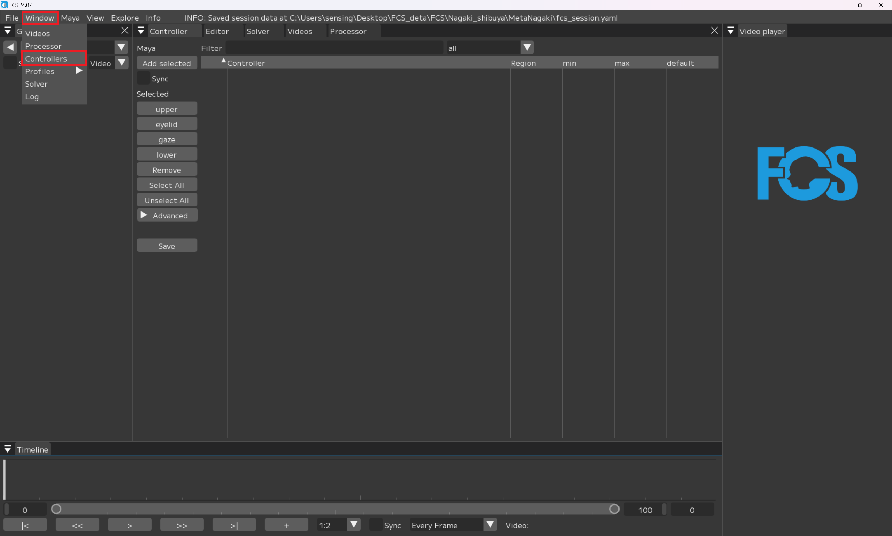
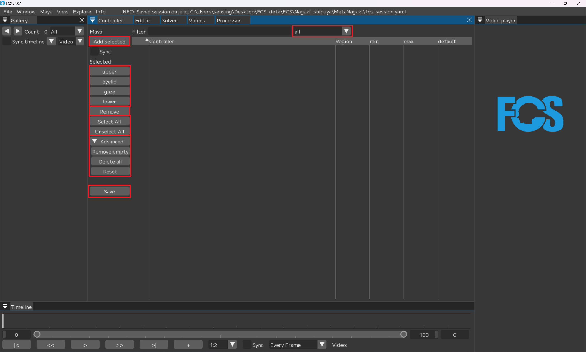
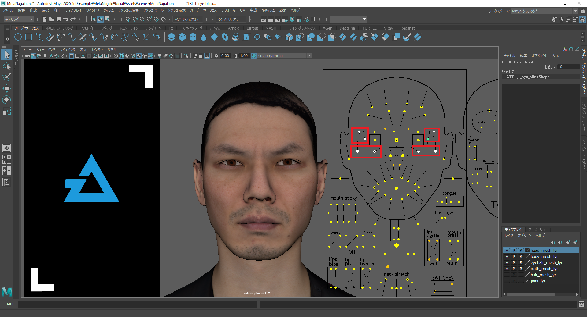
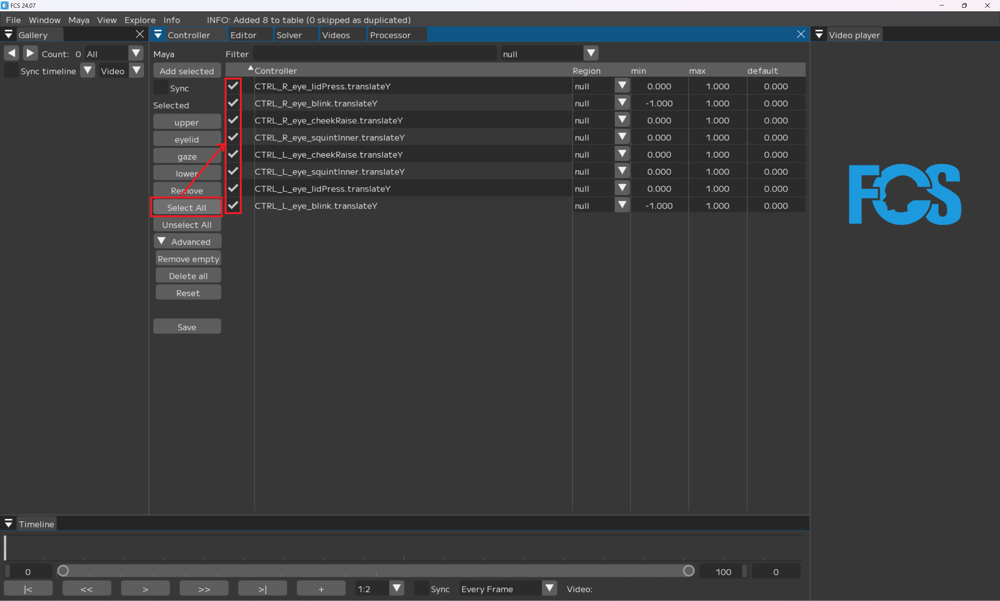
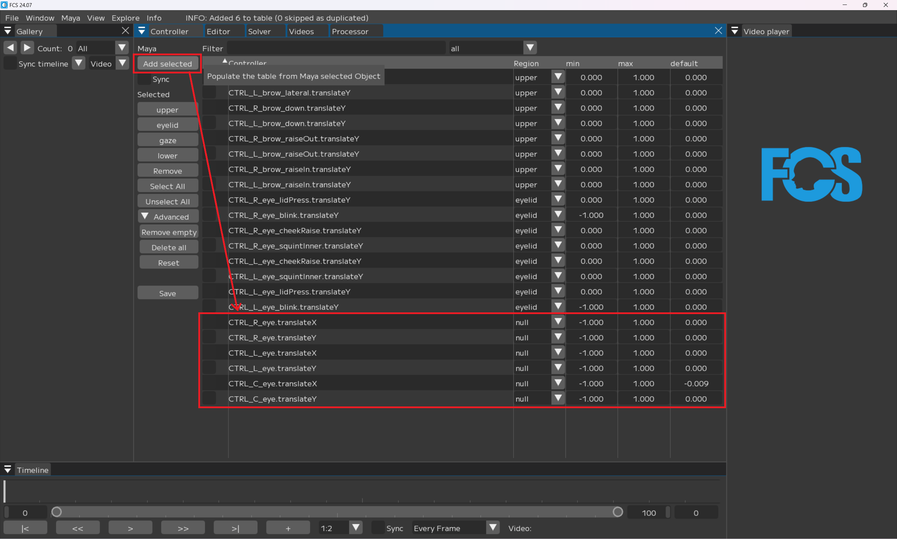
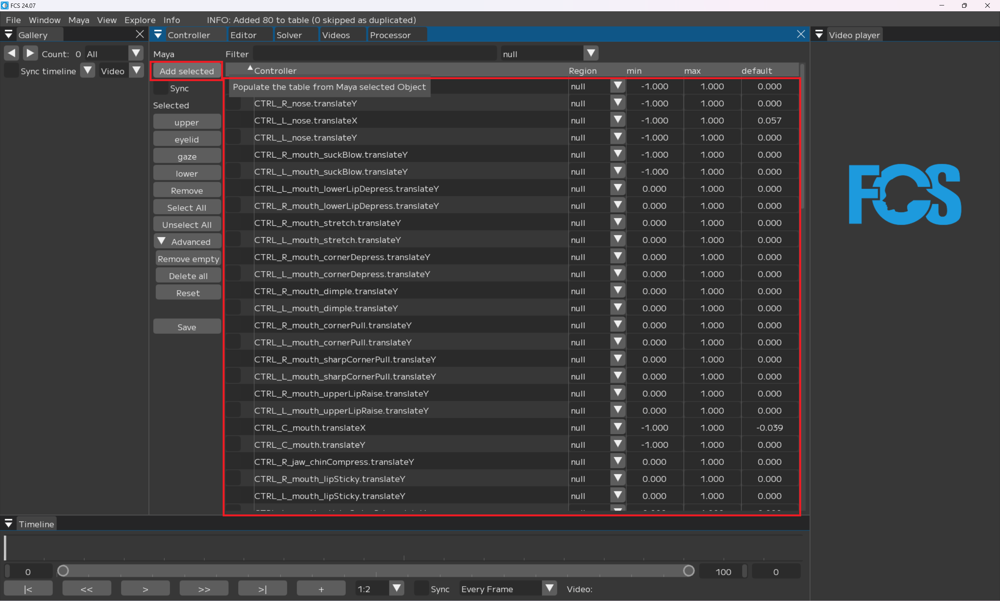
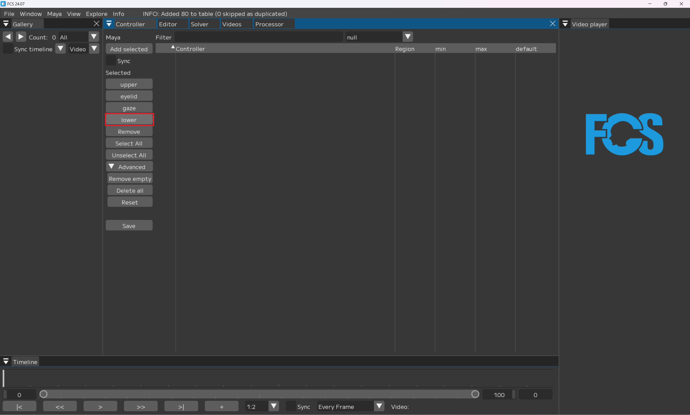
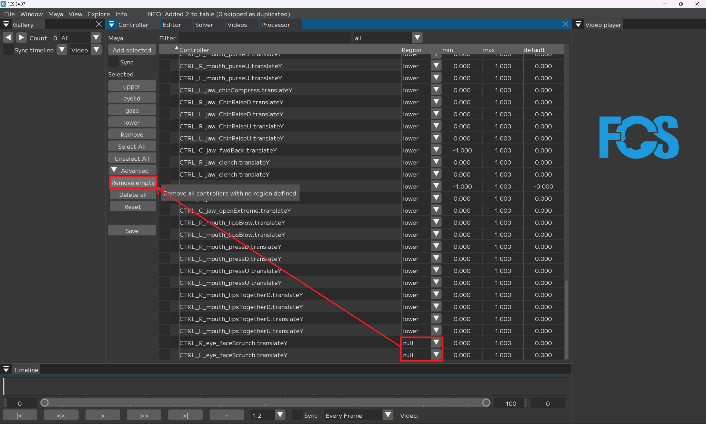
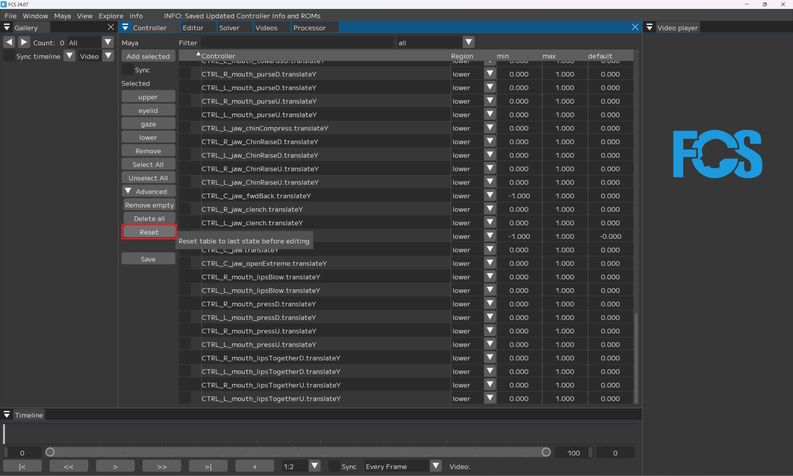

Contorollerの登録
Window▶ControllerでConrollerウィンドウが起動します。
Contollerウィンドウでは、接続しているMayaSceneのコントローラーリグを登録することができます。
FCSでは顔のパーツ区分のことをRegionと呼びます。
アニメーション解析のため、Upper、Eyelid、Gaze、Lowerにそれぞれコントローラーリグを１つ以上登録してください。
また、コントローラーリグの登録時にRegionの最大値最小値も登録できます。 
Note
最大値最小値は自動で入力されますが、値があまりにも大きすぎる場合は調整を行って下さい。
Warning
数値ではない(True/False)アトリビュートがあると正常に動作しないため、登録から除外してください。

一覧
all▼：all/Upper/Eyelid/Gaze/Lower/null 指定した項目（部位の区分）を絞り込んで表示
Maya
Add selected：選択したコントローラーを登録
Sync：- [x] 数値操作をMayaと連動する
Selected
Upper/Eyelid/Gaze/Lower：Region 部位の区分ごとにコントローラーを登録
Remove：- [x] を入れたコントローラーを削除する
select All/Unselect All：controller上に表示されているコントローラーすべてに- [x] /- [x] 解除
▼Advanced
Remove empty：Regionが登録されていないコントローラー(null)を削除する
Delete all：追加 - 登録したコントローラー情報をすべて削除する
Reset：Saveされているデータの状態に戻す
save：controller Infoを登録。
Controllerの登録
Upperの登録方法
MayaでUpperに登録したいコントローラーを選択

FCSに戻り
Add selected

Mayaで選択したコントローラーが「Controller」に表示されるので
select All（=全選択）でUpperに登録したいコントローラーを選択
※null＝Regionが未指定
今回はUpperに登録したいので
Upperを選択
RegionにUpperと表示されたら登録できます。
Eyelidの登録方法
MayaでEyelidに登録したいコントローラーを選択 
FCSに戻り
Add selected
Upperの下にAdd selectedで追加したコントローラーが表示されます。
右上のall▼のタブを選択し、null▼に変更する
Upperに登録したものを非表示にし、未登録のコントローラーのみ表示させることができます。
Note
allのままだとUpperも表示されているため、select AllするとUpperも選択されてしまいます。
間違って全選択してしまった場合はUnselect Allで選択解除が可能です。
nullにすることで登録されていない項目が絞り込まれるのでUpperと同様に
select All（=全選択）でEyelidに登録したいコントローラーを選択
Eyelidを選択

Note
nullで絞り込んでいるのでRegionを登録すると非表示になります。
allに戻すとすべて表示されます。

Note
再表示したい場合の例なので、すべて登録するまでnullのままでも問題ありません。
また、登録したRegionで絞り込むこともできます。
gazeの登録方法
同様に
gazeに登録したいコントローラーを選択し

Add selected 登録済みのコントローラーの下に追加したコントローラーが表示されます。 
右上のall▼のタブを選択し、null▼に変更
Note
nullから変更していない場合はこの手順はスキップ

select All

gaze

Note
nullで絞り込んでいるのでRegionを登録すると非表示になります。
lowerの登録方法
同様に
Mayaでlowerに登録したいコントローラーを選択

Add selected
Note
前段でnullで絞り込んでいるのでnullのみが表示されます

select All

lower 
Note
nullで絞り込んでいるのでRegionを登録すると非表示になります
Upper/Eyelid/Gaze/Lowerをすべて登録し終えたら
save

Warning
未登録状態のものがあるとSave出来ません
トラブルシューティング
セーブできない場合
登録すべきものか確認後
削除したい項目に- [x] →Remove

nullのままのコントローラーを一括削除 
マニュアル以外のコントローラーを登録したい場合
本マニュアルでは、UnrealEngineのMetahumanを使用していますが、
別の3DCG作成ソフトで作成したものでも、各部位に連携できるコントローラーリグがあれば対応可能です。
また、必要最低限のコントローラーのみを登録していますので、
任意で登録するコントローラーを増やすことができます。
Add selectでコントローラーの追加ができない場合
Warning
設定したMayaバージョンとsceneを作成したMayaバージョンが一致しているか確認してください。
コントローラーの登録順番を変えたい場合
例：L/R blinkが離れていて不便なのでblinkを上下（隣接するよう）に並べたい
Note
並び替えたいコントローラーをドラッグしドロップで順番を変更できます。
コントローラーの登録順番を戻したい場合
Reset
controller info登録時の順番に戻ります。 
作業しやすいように並び替えたら
Save